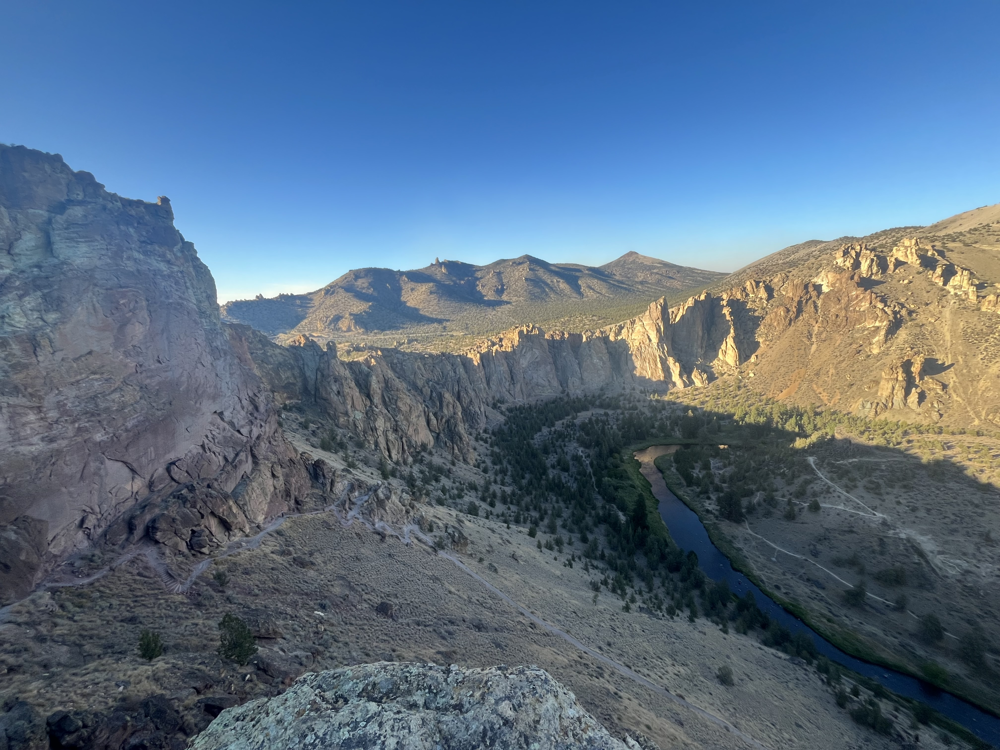
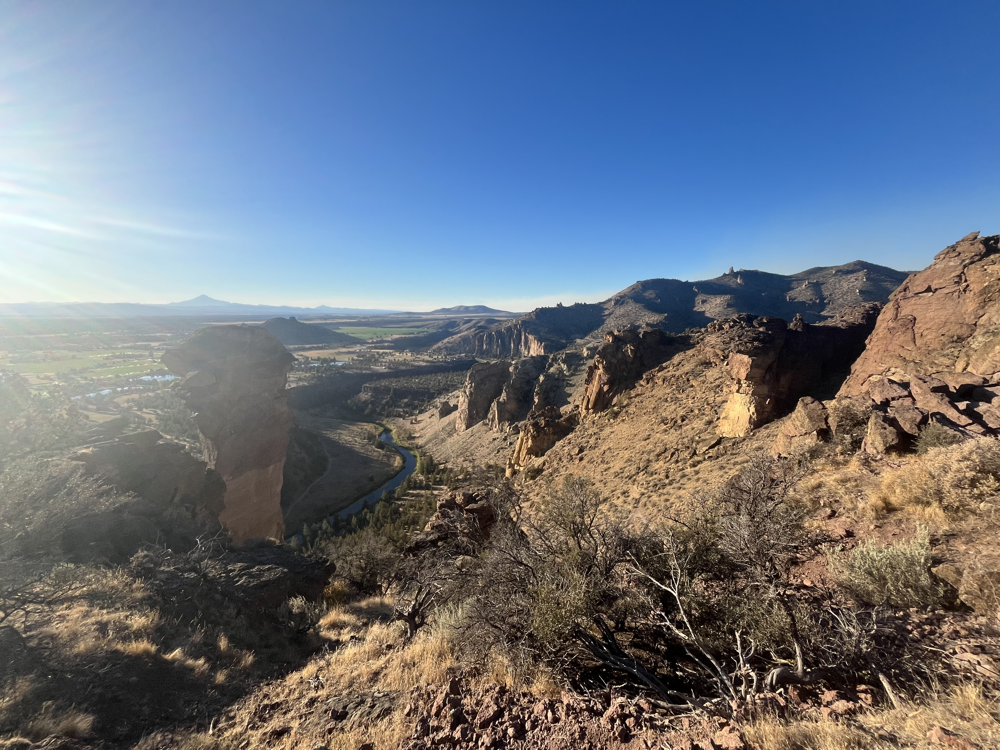
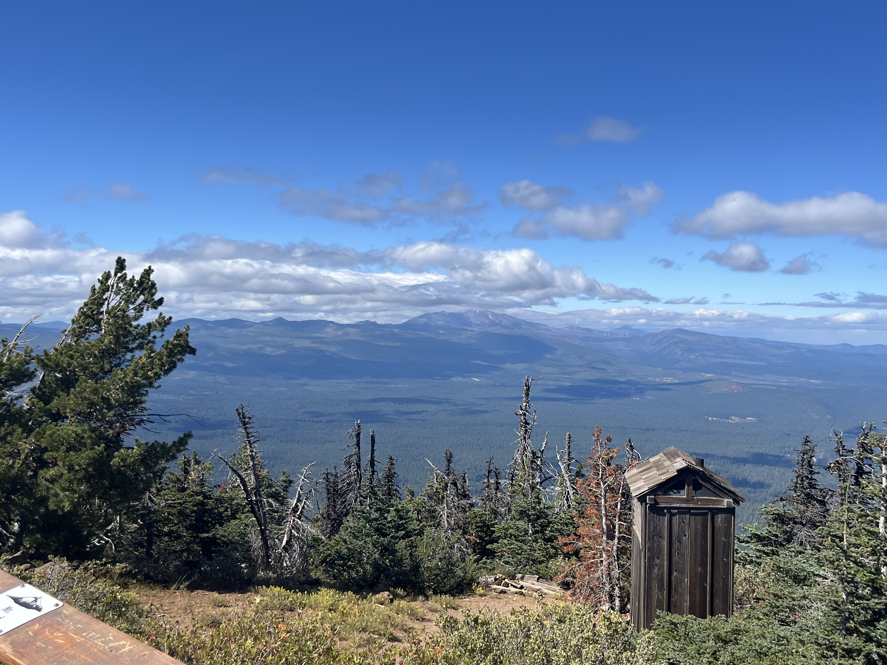
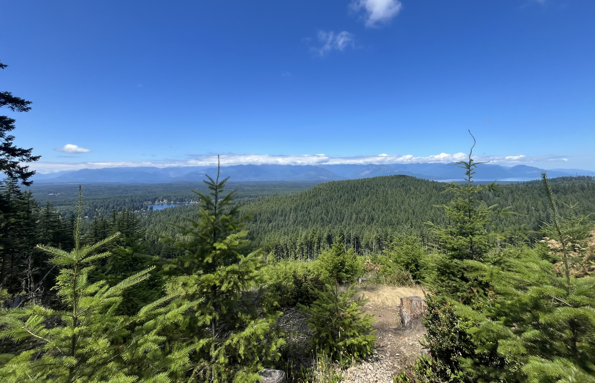
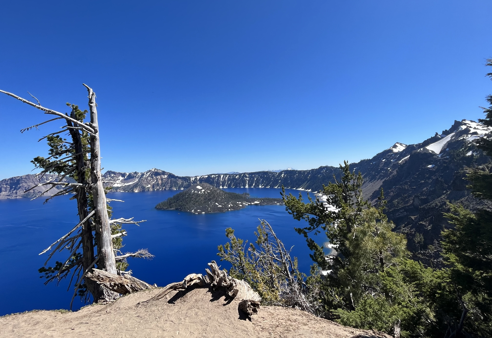
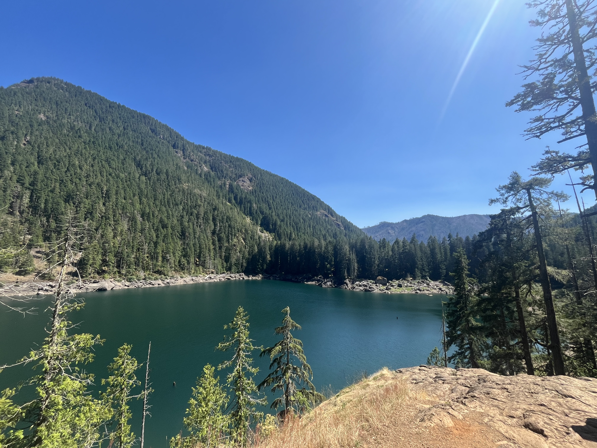

About Me:
Hello! My name is Cole, I am 19 years old and a current student at Olympic College in the CIS 155 class for fall quarter.
I am taking this class to both learn more about web development and as a requirement for my cybersecurity degree. My goal is to eventually become an offensive cybersecurity engineer, penetration tester, or a cyber threat hunter, where I can put my ethical hacking skills to use!
After I graduate from Olympic College in spring of 2027 with my associates degree, I plan to transfer toWestern Washington Universityin fall of 2027 to continue pursuing my bachelors of science in cybersecurity!
My Hobbies!
- Swimming
- Mountain hiking
- Playing video games
- Working out
- Hanging out with family
- Game development
- Practicing hacking skills
Mountain Hike Photos





